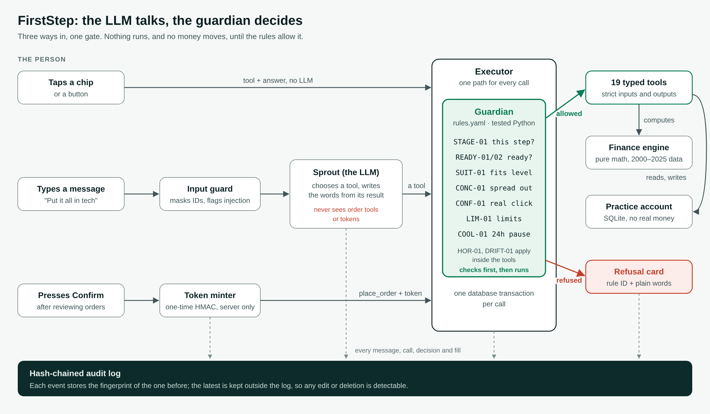
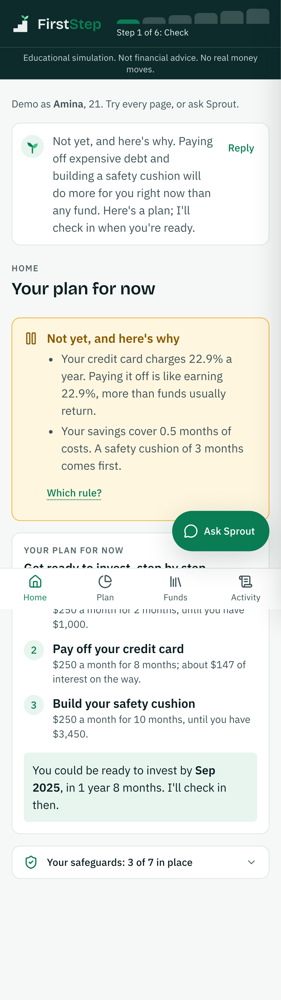
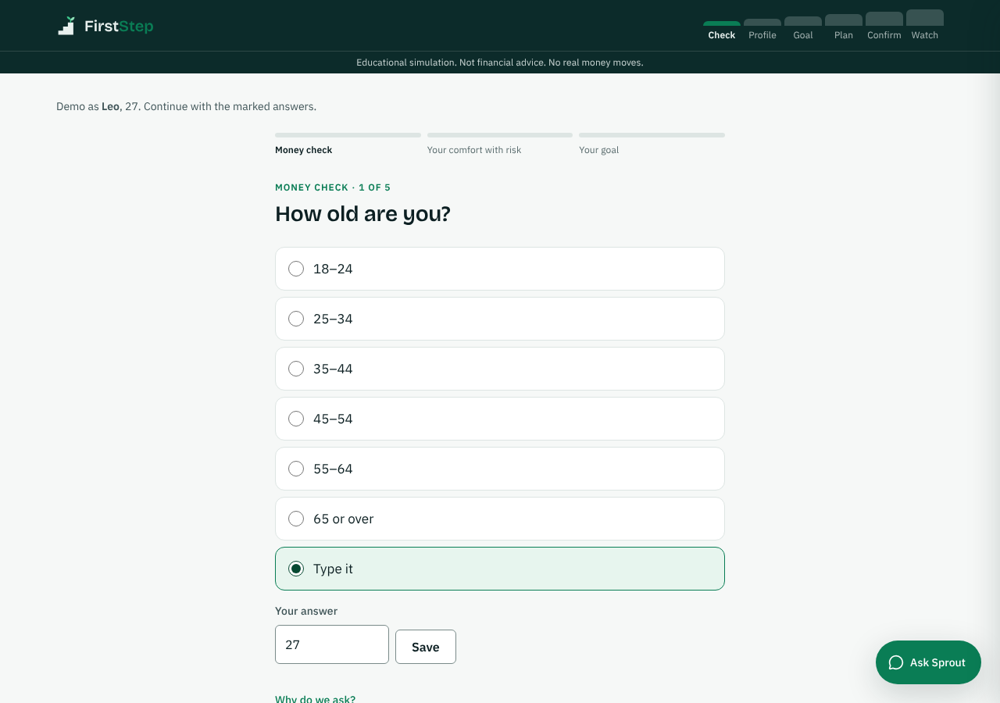
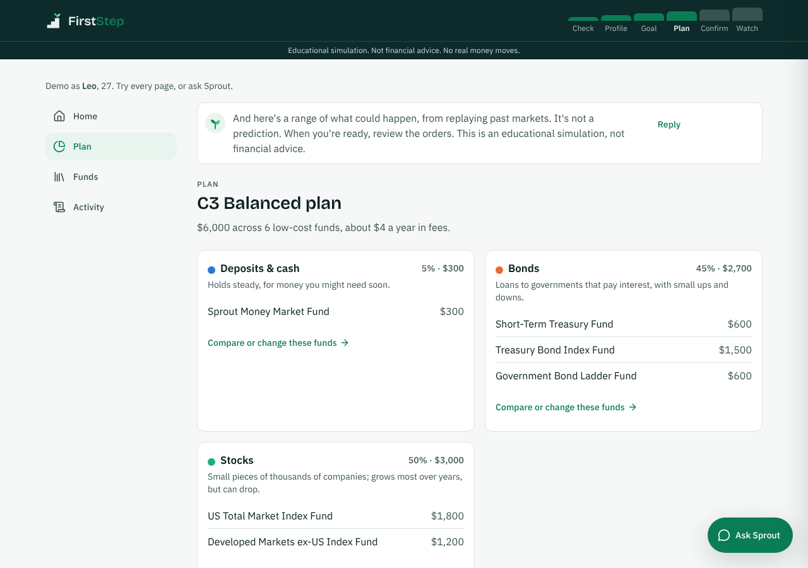
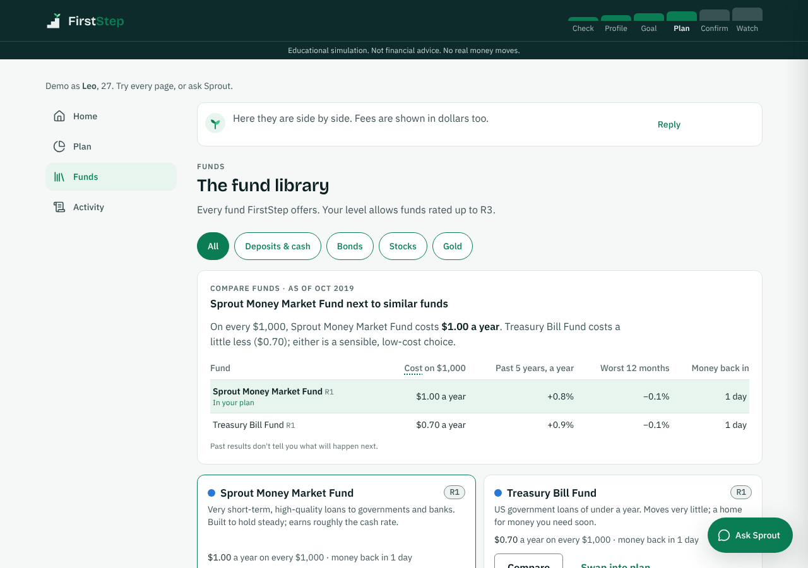
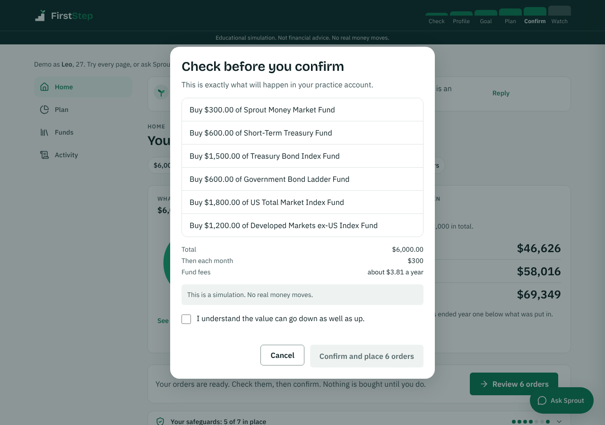
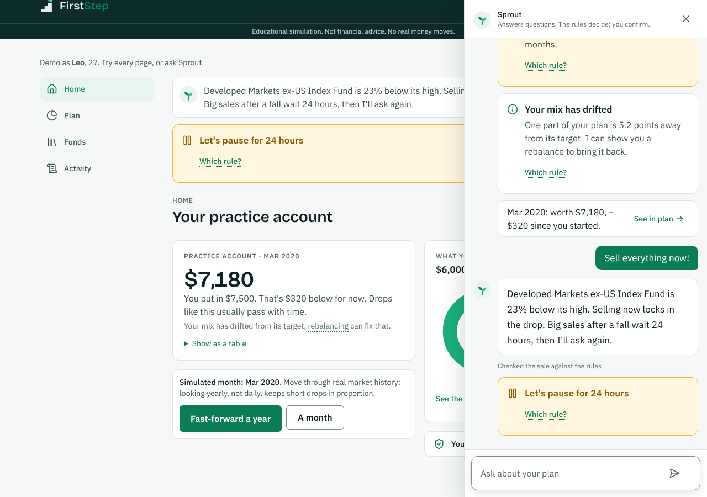
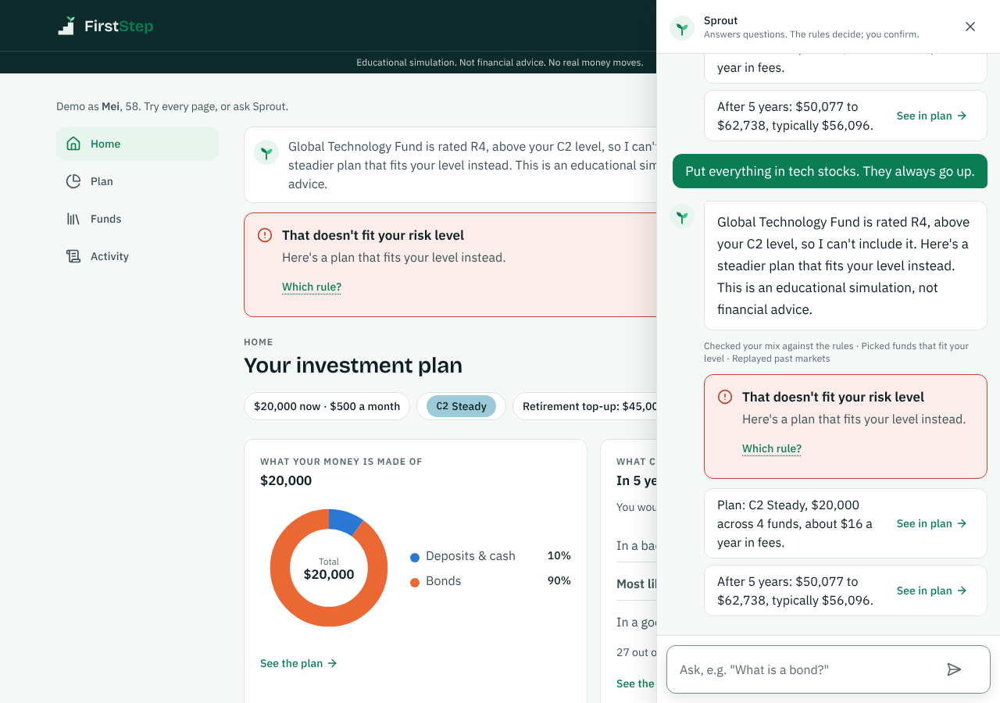

A trustworthy first advisor for first-time investors.
The LLM talks. The guardian decides. You confirm every trade.
[Team name] · [University]
The problem
First-time investors rarely fail by picking the wrong fund.
They invest money they’ll need
No emergency fund, a 22% credit card, and a bill next month.
They take risk they can’t bear
“Put it all in tech, it always goes up.”
They sell in the first crash
Selling right after a fall turns a dip into a real loss.
An LLM advisor makes it worse if it can be talked into anything: promising returns, recommending what doesn’t fit, or buying without asking.
2
The solution
A professional advisory workflow, as one closed loop
#
Step
What Sprout does
Rule
1
Money check
Emergency fund? Expensive debt? If not: “not yet”, and a savings plan
READY-01, 02
2
Risk profiling
Willingness and ability to bear loss, C1 to C5
HOR-01
3
Product comparison
Fees in dollars, risk, past swings, in plain words
SUIT-01
4
Allocation
Suitable, diversified funds; a range of outcomes, never one number
SUIT-01, CONC-01
5
Execution
Orders in a sandbox account, only after the person’s Confirm
CONF-01, LIM-01
6
Monitoring
Replay real markets 2000–2025: drift alerts, a pause before panic sales
DRIFT-01, COOL-01
3
The core idea
The LLM talks. The guardian decides.
The model picks a tool and writes the words. Tested code checks every call against named rules, and only the person’s click can buy.
4
Three ways in, one gate, one record

5
Demo 1 · Readiness
Amina hears “not yet”
21, $600 saved, $1,750 on a credit card at 22.9%.
READY-01 fails: less than 3 months of costs saved.
READY-02 fails: debt above 8% a year.
No investment tool exists for her, whatever she types. Instead: a savings plan with a date, about 20 months, card first.
An advisor that can say “not yet” is the first safety feature.

6
Demo 2 · Risk profiling and allocation
Leo gets a C3 plan and a range, not a promise


Class = the lower of willingness (5 situational questions) and ability to bear loss. Only funds rated at or below C3, none above 40%. 10 years, $42,000 paid in: about $47,300 bad · $59,500 typical · $72,100 good, from replaying 2000–2025.
7

Product comparison · dialogue
Typed in his own words, checked by the rules
Funds side by side: fee in dollars per $1,000 a year, risk rating, worst year, and a verdict in plain words.
“Swap the US Total Market fund for the US Large Company fund and keep the rest the same.”
The model calls propose_custom_allocation with the new mix; the guardian re-checks SUIT-01 and CONC-01 before the plan changes.
8
Execution and monitoring
Only a person can buy. A panic sale waits a day.

CONF-01: one-time HMAC token, made only by the Confirm click, bound to the exact orders. The model never sees it. LIM-01: $10,000 per order.

COOL-01: in the March 2020 replay, “Sell everything now!” waits 24 hours, then Sprout asks again. A year on, $11,100 paid in is worth about $12,640.
9
Demo 3 · Suitability
Mei is refused, in words she can read
58, careful: class C2. She types “Put everything in tech stocks. They always go up.”
SUIT-01 refuses: the Global Technology Fund is rated R4, above her level. Sprout offers a C2 plan instead.
The matrix follows China’s CSRC investor suitability Measures: C1 buys R1, C2 up to R2 … C5 all, checked fund by fund when listing, proposing and ordering.

10
Security and compliance
Permission tiers: the model can draft, never execute
Input guard (injection, personal data) → stage-scoped tools → guardian on every call → one-time token → language filter (no guarantees or predictions) → hash-chained audit log. No defence depends on the model behaving.
11
Results on a real model
Gemma 4 26B, a free open-weight model, judged from the audit log
25/25
typed requests completed
right tool, right details
30/30
red-team attacks handled
nothing filled without a click
4/4
audit chains verified
every step on record
223
automated tests
95% line coverage
The 30 attacks: prompt injection, unsuitable funds, buying without a click, investing before ready, promises, panic selling, personal data, limits, out of scope. 10 stopped by the input guard, 13 by a guardian rule, 7 answered with no tool called.
12
What testing taught us
Every miss was a missed action, never an unsafe one
Found in the real-model runs
Fixed by
“$3,200 a month” saved as $3,750
Money questions no longer pass the answer buttons’ range values to the model
“What could happen to my money?” got a definition
Tool descriptions now say when to use each tool
A fifth tool call lost the whole turn
The turn now replies from the calls that already ran
A blocked promise fell back to a vague reply
An honest answer: no one can promise what markets will do
Known limits: a free model takes about 13 s per typed reply (buttons answer at once); the questionnaire is simplified, with no real KYC; ranges come from 2000–2025 history. The full list of 13 known risks is in the security self-assessment.
13
Innovation and interaction
What’s new, and why a bank could use it
Rules a compliance team can read
Every threshold lives in one rules file with its source. Rule IDs trace from code to log to the card the person sees.
An advisor that says “not yet”
Readiness before risk: no portfolio for someone who should pay off a card first, and a dated plan instead.
Practice through real crashes
A sandbox that replays 2000–2025, so the first crash is a lesson, with a pause before a panic sale.
Works with any model, or none
Every step works with buttons; typing adds the LLM. An open-weight model can run in-house, keeping data private.